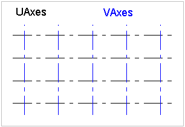

5.4.3.24 IfcGrid
IfcGrid ia a planar design grid defined in 3D space
used as an aid in locating structural and design elements.
The position of the grid (ObjectPlacement) is defined
by a 3D coordinate system (and thereby the design grid can be
used in plan, section or in any position relative to the
world coordinate system). The position can be relative to the
object placement of other products or grids. The XY plane of
the 3D coordinate system is used to place the grid axes,
which are 2D curves (for example, line, circle, arc,
polyline).
The inherited attributes Name and Description
can be used to define a descriptive name of the grid and to
indicate the grid's purpose. A grid is defined by (normally)
two, or (in case of a triangular grid) three lists of grid
axes. The following figures shows some examples.
A grid may support a rectangular layout as shown in Figure 119, a radial
layout as shown in Figure 120, or a triangular layout as shown in Figure 121.
NOTE The PredefinedType denotes the type of
grid that is represented by IfcGrid. The
instantiation of IfcGridAxis's has to agree to the
PredefinedType, if provided.
NOTE The grid axes, defined within the design grid, are
those elements to which project objects will be placed
relatively using the IfcGridPlacement.
|

|

|

|
|
Figure 119 — Grid rectangular layout
|
Figure 120 — Grid radial layout
|
Figure 121 — Grid triangular layout
|
HISTORY New entity in IFC1.0.
IFC4 CHANGE The attribute PredefinedType has
been added at the end of the attribute list.
Informal Propositions:
- Grid axes, which are referenced in different lists
of axes (UAxes, VAxes, WAxes) shall not be parallel.
- Grid axes should be defined such as there are no
two grid axes which intersect twice (see Figure 189).
NOTE Left side: ambiguous intersections A1 and
A2, a grid containing such grid axes is not a valid
design grid; Right side: the conflict can be
resolved by splitting one grid axis in a way, such as
no ambiguous intersections exist.
|

Figure 122 — Grid intersections
|
Common Use Definitions
The following concepts are inherited at supertypes:
 Instance diagram
Instance diagram
Product Placement
The Product Placement concept applies to this entity.
The local placement for IfcGrid is defined in its
supertype IfcProduct. It is defined by the
IfcLocalPlacement, which defines the local coordinate
system that is referenced by all geometric representations.
- The PlacementRelTo relationship of
IfcLocalPlacement shall point (if given) to the local
placement of the same IfcSpatialStructureElement,
which is used in the ContainedInStructure inverse
attribute, or to a spatial structure element at a higher
level, referenced by that.
- If the relative placement is not used, the absolute
placement is defined within the world coordinate system.
FootPrint Geometry
The FootPrint Geometry concept applies to this entity as shown in Table 53.
|
|
Table 53 — IfcGrid FootPrint Geometry |
The 2D geometric representation of IfcGrid is defined
using the 'GeometricCurveSet' geometry. The following
attribute values should be inserted
-
IfcShapeRepresentation.RepresentationIdentifier =
'FootPrint'.
-
IfcShapeRepresentation.RepresentationType =
'GeometricCurveSet' .
The following constraints apply to the 2D representation:

|
As shown in Figure 32, the attributes UAxes
and VAxes define lists of IfcGridAxis
within the context of the grid. Each instance of
IfcGridAxis refers to the same instance of
IfcCurve (here the subtype IfcPolyline)
that is contained within the
IfcGeometricCurveSet that represents the
IfcGrid.
|
|
Figure 124 — Grid representation
|
|
XSD Specification:
<xs:element name="IfcGrid" type="ifc:IfcGrid" substitutionGroup="ifc:IfcProduct" nillable="true"/>
<xs:complexType name="IfcGrid">
<xs:complexContent>
<xs:extension base="ifc:IfcProduct">
<xs:sequence>
<xs:element name="UAxes">
<xs:complexType>
<xs:sequence>
<xs:element ref="ifc:IfcGridAxis" maxOccurs="unbounded"/>
</xs:sequence>
<xs:attribute ref="ifc:itemType" fixed="ifc:IfcGridAxis"/>
<xs:attribute ref="ifc:cType" fixed="list-unique"/>
<xs:attribute ref="ifc:arraySize" use="optional"/>
</xs:complexType>
</xs:element>
<xs:element name="VAxes">
<xs:complexType>
<xs:sequence>
<xs:element ref="ifc:IfcGridAxis" maxOccurs="unbounded"/>
</xs:sequence>
<xs:attribute ref="ifc:itemType" fixed="ifc:IfcGridAxis"/>
<xs:attribute ref="ifc:cType" fixed="list-unique"/>
<xs:attribute ref="ifc:arraySize" use="optional"/>
</xs:complexType>
</xs:element>
<xs:element name="WAxes" nillable="true" minOccurs="0">
<xs:complexType>
<xs:sequence>
<xs:element ref="ifc:IfcGridAxis" maxOccurs="unbounded"/>
</xs:sequence>
<xs:attribute ref="ifc:itemType" fixed="ifc:IfcGridAxis"/>
<xs:attribute ref="ifc:cType" fixed="list-unique"/>
<xs:attribute ref="ifc:arraySize" use="optional"/>
</xs:complexType>
</xs:element>
</xs:sequence>
<xs:attribute name="PredefinedType" type="ifc:IfcGridTypeEnum" use="optional"/>
</xs:extension>
</xs:complexContent>
</xs:complexType>
EXPRESS Specification:
|
|
| HasPlacement | : | EXISTS(SELF\IfcProduct.ObjectPlacement); |
|
EXPRESS-G diagram
Attribute Definitions:
| UAxes | : | List of grid axes defining the first row of grid lines. |
| VAxes | : | List of grid axes defining the second row of grid lines. |
| WAxes | : | List of grid axes defining the third row of grid lines. It may be given in the case of a triangular grid. |
| PredefinedType | : |
Predefined types to define the particular type of the grid.
IFC4 CHANGE New attribute.
|
| ContainedInStructure | : |
Relationship to a spatial structure element, to which the grid is primarily associated.
IFC2x CHANGE The inverse relationship has been added to IfcGrid with upward compatibility
|
Formal Propositions:
| HasPlacement | : | The placement for the grid has to be given. |
Inheritance Graph:
 Link to this page
Link to this page